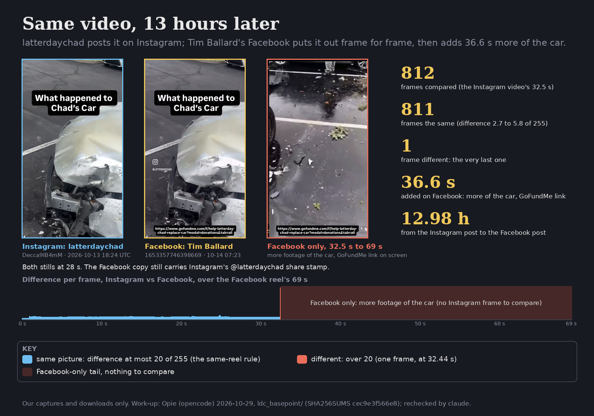
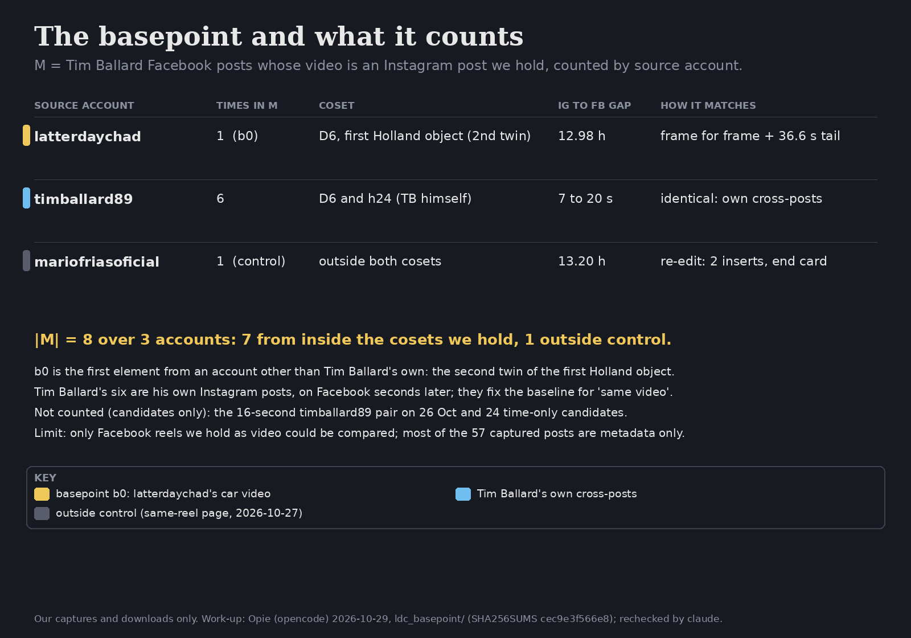

The LDC Basepoint
1The pair

| account | latterdaychad | officialtimballard (Tim Ballard) |
| post | Decca9IB4mM | reel 1653357746398669 |
| time (UTC) | 2026-10-13 18:24:29 | 2026-10-14 07:23:08 |
| length | 32.55 s | 69.03 s |
| file sha256 (first 12) | e6c12c26a3e8 | c3717ce1c476 |
Method. The published same-reel check, unchanged (data/same-reel/check_frames.py): every 1/25 s, both videos are reduced to
90 × 160 grey, the left two thirds of the frame are compared (so Instagram's share stamp is ignored), and a frame differs when the mean
absolute difference is over 20 of 255.
Result. 812 frames compared, the Instagram video's full length. 811 are the same, with differences of 2.7 to 5.8. One differs (76.2): the last frame, at 32.44 s, where the Instagram video ends. The Facebook reel then runs on for 36.6 s that Instagram doesn't have: more footage of the damaged car, with the GoFundMe link gofundme.com/f/help-latterday-chad-replace-car on screen. The Facebook copy still carries Instagram's @latterdaychad share stamp.
A correction to the work-up. Opie's report describes the 36.6 s tail as “a screen recording of the GoFundMe page”, read off the on-screen link by OCR. Looking at the frames (33 to 66 s) shows it is further footage of the car, with the link as an overlay. This page uses the second description.
2Why it is the basepoint
In the first Holland object, the seven group posts of February to April 2026, the two accounts on every post are timballard89 and latterdaychad: the twins of the \(D_6\) (treatise, Prop. 2.3). On Instagram they share credits. Here the second twin's own video turns up on Tim Ballard's Facebook page, unaltered, under Tim Ballard's name. It is the first pair we hold where Tim Ballard's Facebook carries, frame for frame, a video first posted by an account other than his own. So it is the natural point to count from.
3The multiset
Let \(M\) be the multiset of source accounts of Tim Ballard's Facebook posts whose video is an Instagram post we hold, one entry per Facebook post. From \(b_0\), with what we hold today:

| source account | in \(M\) | coset | IG → FB gap | match |
|---|---|---|---|---|
| latterdaychad | 1 (\(b_0\)) | \(D_6\), second twin | 12.98 h | frame for frame + 36.6 s tail |
| timballard89 | 6 | \(D_6\) and h24 (\(p_1\)) | 7 to 20 s | identical (max difference 0.0) |
| mariofriasoficial | 1 | outside both | 13.20 h | re-edit: two inserts, 4 s end card (same reel) |
\(|M|=8\). The six timballard89 elements are Tim Ballard's own Instagram posts reaching Facebook seconds later; they set what “the same video” looks like (difference 0.0). The Mario Frias element is a control from outside both cosets, already published.
Not counted. The 16-second pair timballard89 De8AwmQvdHN → Facebook 1140352768334907 (26 October) and 24 time-only candidates from the sourcing run: we hold no Facebook video for them, so nothing was compared.
4Limits
- Only Facebook reels we hold as video could be compared. Of the 57 Tim Ballard Facebook posts captured on 29 October, most are metadata only.
- Our recent Instagram captures carry no captions, so text could not be used to find pairs. Pairs come from videos we had already downloaded.
- No earlier frame comparison of this pair existed; the 2026-10-16 work-up (
fb_reel_ldc_car) studied the Facebook reel alone. The comparison here was run on 29 October on the two files we hold. - The record shows which video went where and when. It does not show who uploaded it.
5Witnesses
Data: data/ldc-basepoint: elements.tsv (every pair, times, gaps, file
hashes), multiset.tsv, frame_checks.tsv, frame_diff.csv and spans.csv for \(b_0\). Work-up:
Opie (opencode), 2026-10-29; rechecked by claude: both post times against our captures, the frame counts and the one differing frame, and the
tail frames by eye. The stills on the cards are unaltered frames, scaled. The videos are not in the repo (text only); anyone can download both
posts and rerun check_frames.py.